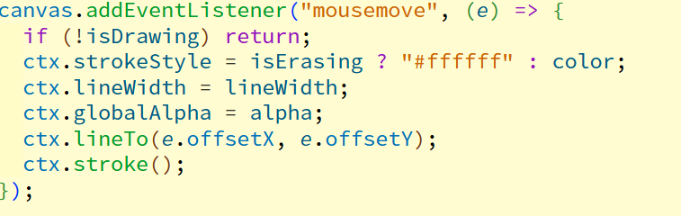

このページでは、JavaScriptのCanvas APIを使ったお絵描き機能の仕組みを解説し、実際に体験できます。
このお絵描きアプリは、HTMLの<canvas>要素とJavaScriptを組み合わせて作られています。
<canvas>は、HTML上で図形や画像を描画するための「キャンバス（画用紙）」のような領域です。これ自体には描画能力はなく、JavaScriptを使って線や図形を描き込みます。
まず、HTMLに上記のように<canvas>タグを配置します。そして、JavaScriptでこの要素を取得し、描画の準備をします。
getContext("2d")は、2Dグラフィックを描くための様々な機能（メソッドやプロパティ）を持つ「コンテキストオブジェクト」を取得する命令です。これ以降、ctxという変数を使ってキャンバスに描画していきます。
線は、マウスの動きに合わせて描画されます。具体的には、以下の3つのマウスイベントを利用しています。
これらのイベントをJavaScriptで監視し、以下のような流れで描画処理を行っています。
beginPath)。そして、マウスの座標までペンを移動させます (moveTo)。lineTo)。そして、その線に色を付けて実際に表示します (stroke)。このアプリに実装されている各機能が、どのように実現されているかを解説します。
コントロールパネルの入力値が変わると、JavaScriptがそれを検知し、ctxオブジェクトが持つ以下のプロパティに値を設定しています。これにより、stroke()で描画される線のスタイルが変わります。
ctx.strokeStyle = "色コード";ctx.lineWidth = 太さの数値;ctx.globalAlpha = 0.0から1.0の数値;消しゴムは、特別な消去機能を使っているわけではありません。実は、キャンバスの背景色（この場合は白）で線を描いているだけです。これにより、描画した部分を「消した」ように見せています。
この機能は、キャンバスの状態を画像として保存しておくことで実現しています。
canvas.toDataURL()を使って現在のキャンバスの状態を画像データに変換し、配列に保存します。clearRect)してから、取り出した画像データをキャンバスに貼り付け(drawImage)て、1つ前の状態を復元します。ctx.clearRect()という命令を使って、キャンバス全体を指定した範囲で透明に消去しています。
現在のペン